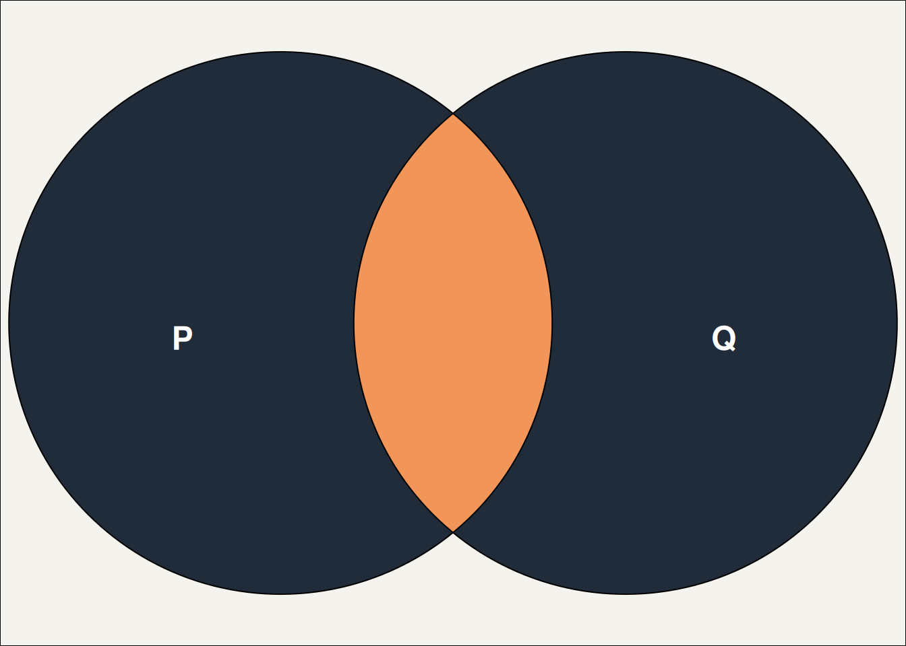
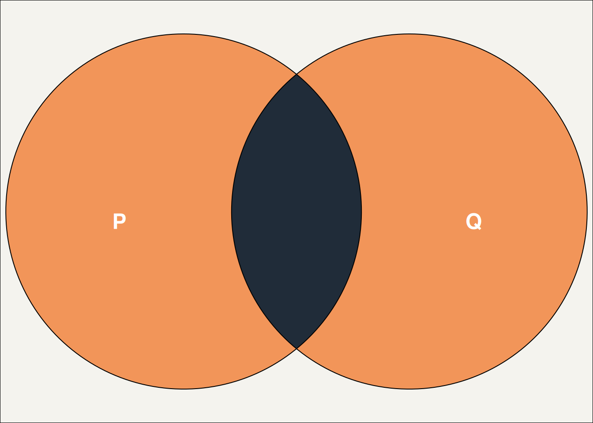

No feedback found for this session
Logic in Excel
excel
advanced
Session materials
- all materials
- slides
html / pdf - exercises
.xlsx / completed exercises .xlsx
Welcome
- this session is for üå∂üå∂üå∂ advanced Excel users, who are confident writing formulas
Acknowledgements
Sincere thanks and appreciation to people who volunteered formulas for this session:
- Laura De Jongh (Hanover Scotland)
- Gail Young (NHS Greater Glasgow & Clyde)
- Gail Donaldson (NHS Lanarkshire)
- Matthew Hooks (Scottish Ambulance Service)
- Susanna Kirk (NHS Fife)
- Hilary Guthrie (NHS Lothian)
- Irene Ventura (NHS Lanarkshire)
- Peter Wild (NHS Ayrshire & Arran)
- Chris Spratt (NHS National Services Scotland)
Session outline
- intro to logic in Excel
- five minutes of Boolean algebra
- basic logical functions (
NOT,AND,OR) - putting logical functions to work with
IFandIFS
- using logic in Excel
- dealing with errors and missing values (
IFERROR,IFNA, and friends) - managing different data types (
ISNUMBERand friends) - conditional summarising (
SUMIF,COUNTIFS, and friends) - nesting
IFstatements and future-proofing your work
- dealing with errors and missing values (
Boolean algebra
- the standard way of working with truth-values
- found all over mathematics, logic, computer science…
- think of a statement like
"my cat is blue"- call that
Pto save writing it every time
- call that
- assume that
Pis either completelyTRUEor completelyFALSE
NOT
-
NOTgives us the opposite truth-value - if
PisFALSE, thenNOT PisTRUE - a useful shorthand: the truth table:
| P | NOT P |
|---|---|
| TRUE | FALSE |
| FALSE | TRUE |
AND
- we also have functions to understand what happens when we’re dealing with two statements
-
ANDis a great example - it’sTRUEwhen both the statements areTRUE
| P | Q | P AND Q |
|---|---|---|
| TRUE | TRUE | TRUE |
| TRUE | FALSE | FALSE |
| FALSE | TRUE | FALSE |
| FALSE | FALSE | FALSE |

OR
-
ORisTRUEwhen either of the statements areTRUE
| P | Q | P OR Q |
|---|---|---|
| TRUE | TRUE | TRUE |
| TRUE | FALSE | TRUE |
| FALSE | TRUE | TRUE |
| FALSE | FALSE | FALSE |

XOR
- For completeness, we should also talk about
XOR -
XORisTRUEwhen either of the statements - but not both - areTRUE
| P | Q | P XOR Q |
|---|---|---|
| TRUE | TRUE | FALSE |
| TRUE | FALSE | TRUE |
| FALSE | TRUE | TRUE |
| FALSE | FALSE | FALSE |

NOT in Excel
- sweet relief: please open the sample workbook for this session in Excel
- have a look at the
NOTworksheet-
NOT()function inputs in the truth-table - example use about inhalers
- note that
NOT()will treat any number asTRUE, and 0 asFALSE
- note that
-
Task
- please add a formula to decide whether a person is a non-user of inhalers or not
- it should return
TRUE/FALSEbased on the number of inhalers used
AND and OR in Excel
- have a look at the
AND / ORworksheet- have a look at the truth-table for
ANDandOR - specifically, look at the formulas and the way they use
AND()andOR()
- have a look at the truth-table for
Task
- in the hypertension/diabetes table, you’ve got several rows of data where each represents a person. Please write two formulas:
- for diet and lifestyle, you’ll want to return
TRUEif a person has either hypertension and/or diabetes - for statins, you’ll want to return
TRUEis a person has both hypertension and diabetes
- for diet and lifestyle, you’ll want to return
IF
- unfortunately our data usually doesn’t come neatly coded into
TRUEandFALSE - that mean we’ll usually need to use our basic logical functions in combination with other functions
-
IFis a great example of a function that helps you convert to logical values - here’s an example formula:
=IF(B3 > 150, "Hypertension", "No hypertension")- if the value in B3 is over 150, the formula returns
"Hypertension" - otherwise it returns
"No hypertension"
- if the value in B3 is over 150, the formula returns
- this is useful in its own right, but gets even more powerful when you return logical values
- have a look at the top table on the
IFworksheet
Task
- in the
IFworksheet, there’s an incomplete table of blood pressure values - please write a formula to return
TRUEif those values are over 150, andFALSEotherwise - there’s a named cell on this sheet called
Cutoff- please now change that 150 in yourIFformula to use the value of the named cell
TRUE and FALSE are 1 and 0
- many other tools let you add up
TRUE/FALSEvalues as if they were 1s and 0s - this can be very useful - say, to quickly count matching values
- Excel needs a minor workaround: add
--before a logical value to treat it as a number:=SUM(--Table1[Hypertension?])
IFS
-
IFSallows you to check for the presence of several conditions fairly concisely - an example:
=IFS(B4 = TRUE,"High",C4 = "CRD","High", D4 > 20,"High", TRUE,"Low")- read this horror as pairs of arguments, like
B4 = TRUE,"High" - each pair contains
- a logical test - like
B4 = TRUE - a return value if that test is
TRUE- like"High"
- a logical test - like
- the final pair of arguments are a catch-all to pick up all non-matched values
- read this horror as pairs of arguments, like
Public service announcement
- just because you can, doesn’t mean you should
-
IFSget pathologically complicated - pivot tables might be better for more complicated cases
IFNA, IFERROR, and friends
- these functions are great for dealing with errors and missing values
- that’s useful, because (understatement of the decade) Excel isn’t very good at consistently dealing with errors and missing values
IS and IF functions
-
IS****functions detect errors and missing values and returnTRUE/FALSE -
IF****functions detect, and then:- if an error is found display a message of your choice
- otherwise just repeat the value they refer to
What do they detect?

The important error messages ones
- BLANK = “There’s no value in that cell”
- ERROR = “This formula doesn’t work properly”
- #N/A = “I can’t find what I was asked to find”
- ERR = “A non-N/A error has happened”
SUMIF and COUNTIF
- basically,
IFplus summary functions - three simple-ish examples to see:
-
=SUMIF(B3:F3,">5"), which totals all values in the range greater than 5 -
=COUNTIF(A10:E10,"ramipril"), which counts all occurrences of the work “ramipril” in a range - or the close relative
=COUNTIF(A10:E10,"*prazole")which uses a wildcard to count all the words ending in “prazole” from a range
-
- there’s also the more complex
SUMIFS, which allows you to sum with multiple conditions
Example applications
-
=IF(AND(B4 >= TIMEVALUE("08:30"), B4 <= TIMEVALUE("17:00")), "In hours", "Out of hours")to determine if a time is in- or out-of-hours -
=IF(LEN(B20)=9,CONCATENATE("0",B20),TEXT(B20,"0"))to re-add a dropped leading 0 from a CHI / ISBN -
=IF(ISBLANK(B26), "", B26)to elegantly reference date values to avoid returning00/01/1900for missing values -
=IF((TODAY() > DATE(YEAR(B31) + 3, MONTH(B31), DAY(B31))), "Late", "Not late")to determine if an activity has taken place in the past three years -
=FILTER(B35:B41, (C35:C41 > 4)*D35:D41>4)to find all rows with a value more than 4 in both the C and D column -
=IF(COUNTIF(B44,"*ow*"),TRUE,FALSE).IFby itself doesn’t allow wildcard matching, so you can attempt a work-around viaCOUNTIF